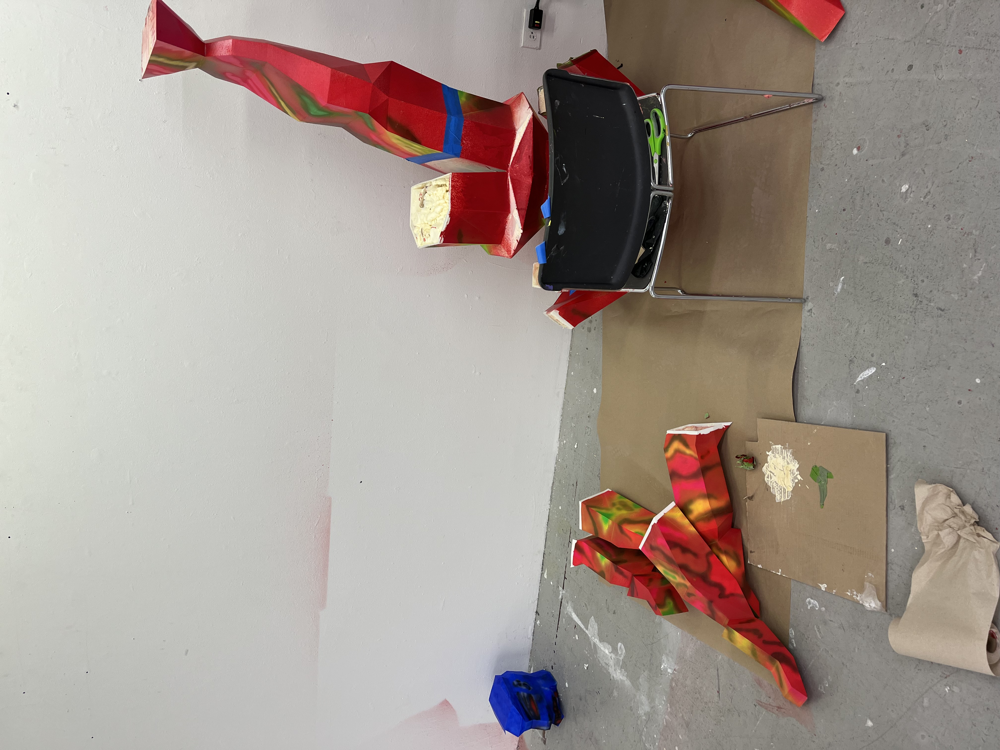
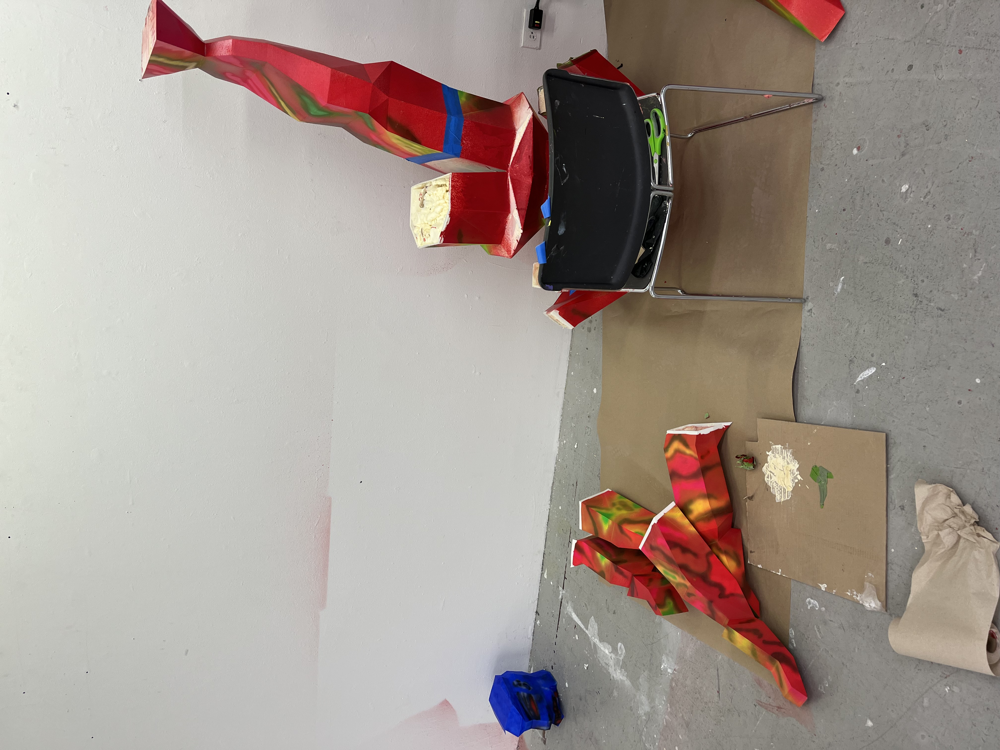
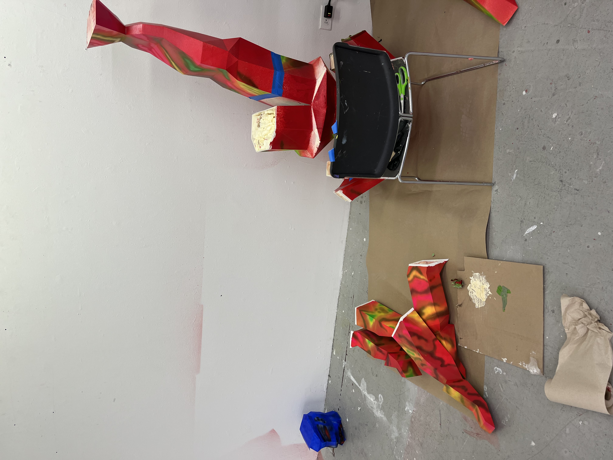

| I employ my 3D modeling, 3D printing, and sculpture skills to execute this project. I use Blender to build the digital model and print it in resin material in 15 pieces. The pieces are glued together with epoxy and the gaps between pieces will be filled with putty and sanded smooth. The figure will be sprayed with one layer of primer, one layer of base color, and eventually another layer of acrylic paint. This work will advance my understanding of the interplay between digital and physical creation, while also building upon my knowledge of materiality and form. |
